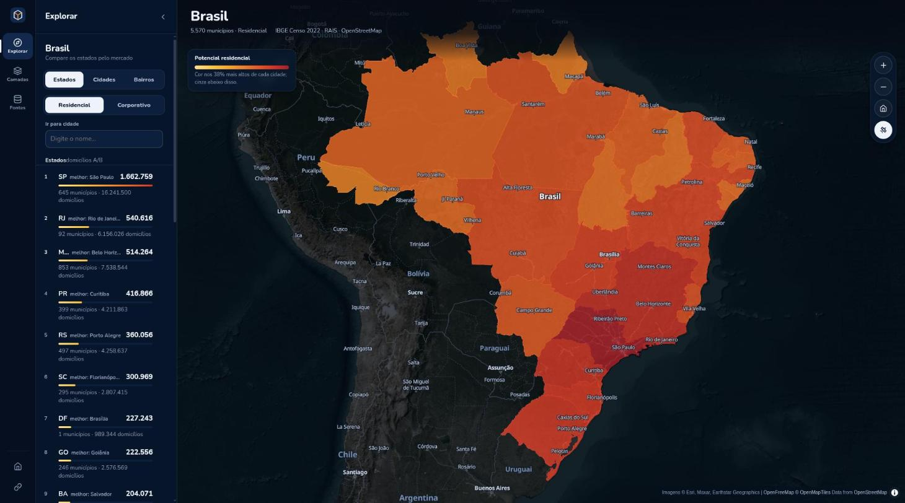
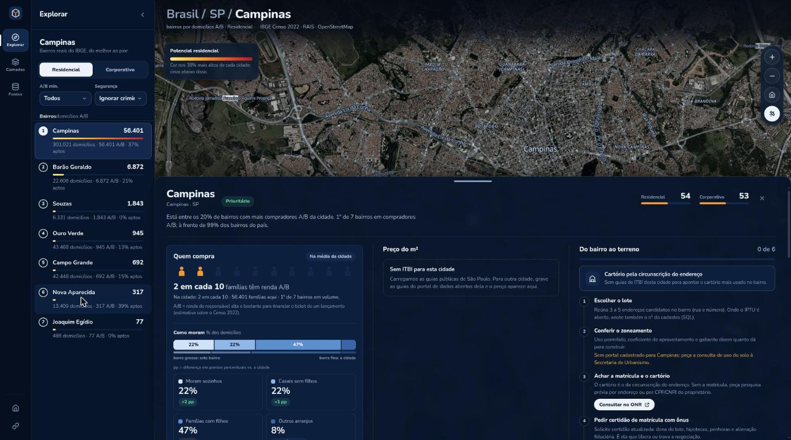
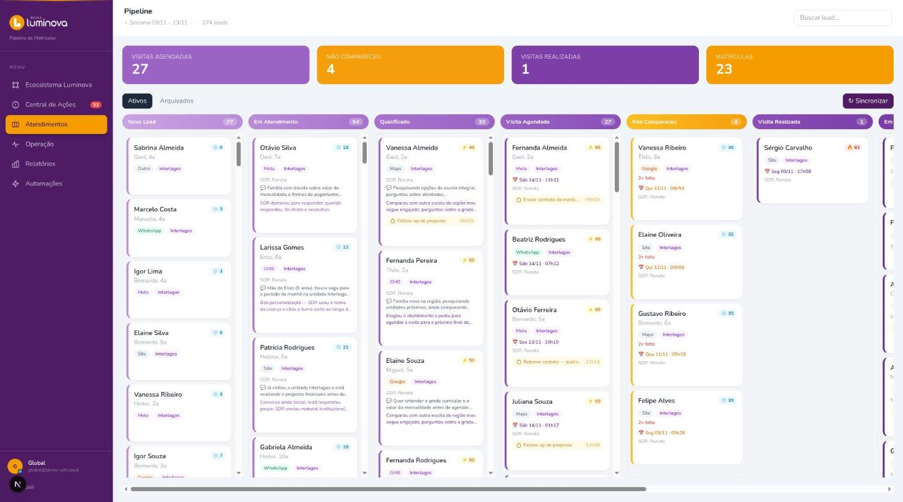
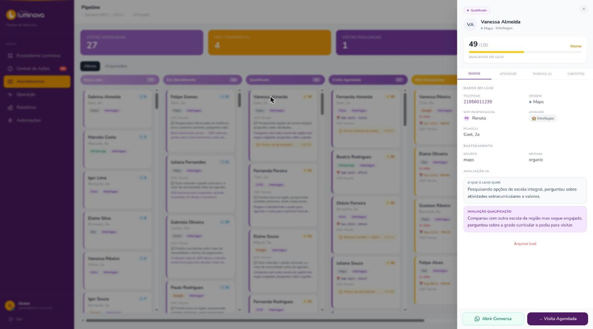
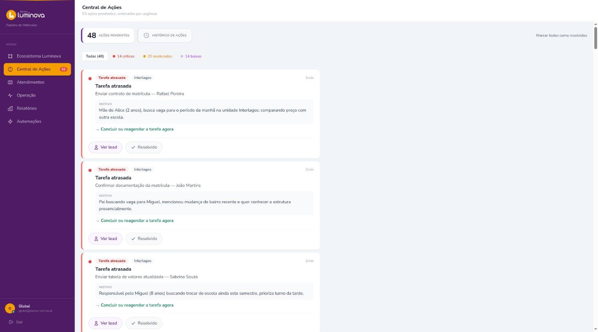

Atlas: where to open the next unit
Expansion was decided city by city with no shared data. Atlas answers which city and which neighborhood to open in, and every number on screen carries its source and a fact or estimate label. The scoring engine is deterministic, with no LLM in it, and its weights live in versioned YAML. A predictive model (visits, enrollments) only reaches the screen if it passes leave-one-out validation with R² ≥ 0.2; when it fails, the screen shows no prediction.
The original runs on the network's private data, so the live link is Atlas Terra: the same engine and interface rebuilt for real-estate development (where to look for land for residential and office buildings), using only public data for all 5,570 Brazilian municipalities.


- Scores H3 hexagons (about 0.7 km² each) and real IBGE neighborhoods across 1,100+ municipalities in the original
- Crosses Census 2022, the INEP school registry, the existing units with their tuition table, and CRM and visit counts
- Estimates cannibalization between units and draws drive-time isochrones with OSRM
- Two modes: an analysis studio for the expansion team and a presentation mode for franchise candidates, with internal prices hidden
- CRM data enters through a read-only transaction and leaves as counts per unit and month, with no names, phones or emails
An enrollment CRM that reads the conversations
I built the CRM from scratch: more than 11,000 leads across 8 pipeline stages, synced in real time with WhatsApp and the visit scheduling system. A chain of LLMs reads the real WhatsApp conversations, qualifies each lead, pulls out commercial data and flags the objections and competitors the family mentioned. Structured extraction only stores what the conversation says explicitly, so the model has less room to invent data.
These screens come from a demo build: the same code and the same detection jobs, run against 380 fictional leads. The brand "Luminova" is made up; the production system and its data stay private.



- Automatic fallback across LLM providers, so one provider's outage does not stop qualification
- Scores each sales rep on 4 dimensions from the actual conversation transcripts
- Two LangChain WhatsApp agents in production: one reschedules visits, one follows up leads by funnel stage. They check the calendar and CRM live and hand the chat to a person when they can't answer
- Retries with backoff, distributed locks, health checks and CI/CD around the background jobs
Code and write-ups
Enterprise AI harness
Governing AI coding agents that touch production: a TypeScript MCP broker so agents use tools without seeing credentials, a policy engine, PII masking, an audit log and human approval for destructive actions.
enterprise-ai-harness-case →
Chrome extension
Studium
Click a word in a Netflix subtitle and get its meaning in that scene. FastAPI backend, LLM in JSON mode, Pydantic validation and a timeout fallback.
studium →